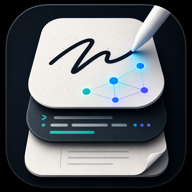

InkLayer 隱私權政策
生效日期：2026 年 10 月 20 日。發行者：voidful。
摘要
InkLayer 是結合手寫、PDF 與 Markdown 的筆記 App。你的筆記留在你的裝置上，存成其他 App 也能開啟的一般檔案。InkLayer 沒有帳號、沒有廣告、沒有分析或追蹤，也沒有當機回報服務。開發者不會收到你的筆記、檔案，也不會收到你使用 App 的情形。
留在你裝置上的資料
- 你的筆記庫：Markdown 筆記、你匯入的 PDF（InkLayer 不會修改原檔）、手寫、圖層、圖片、影片、錄音，以及辨識出的手寫文字。這些都存在你選擇的筆記庫資料夾：裝置上，或「檔案」裡的資料夾（例如 iCloud 雲碟）。
- 尚未儲存的文字副本，讓 App 當機後能救回。筆記存檔後就會刪除。
- 你的設定，例如外觀、筆與電子紙偏好，以及是否已購買終身版。
- 你輸入的 WebDAV 伺服器位址、帳號與密碼，存在系統的安全儲存區（鑰匙圈）。
麥克風
只有在你於文件中點「錄音」後錄製時，InkLayer 才會使用麥克風。錄音存在你的筆記庫，InkLayer 不會傳到任何地方。
手寫辨識
為了讓手寫可以被搜尋，InkLayer 在裝置上用 Apple 的 Vision 框架辨識手寫，手寫的影像不會離開裝置。你可以在「設定 › 筆與書寫」關閉這個功能。
InkLayer 何時會連網
- WebDAV 同步：如果你設定了，會把筆記庫檔案傳到你指定的 WebDAV 伺服器，也只傳到那裡。資料由該伺服器的管理者依其政策處理。
- InkLayer 終身版透過 App Store（Android 為 Google Play）購買，付款由商店處理，InkLayer 不會收到你的付款資料、姓名或 email。
- 你點的連結會用瀏覽器開啟。
這個版本的 InkLayer 沒有 AI 功能，不會傳送任何內容給 AI 服務。
分享
InkLayer 不販售、不分享個人資料，也不會把你的資料用於廣告或追蹤。
刪除資料
你可以在 App 裡刪除筆記，或刪除筆記庫資料夾。刪除 InkLayer 會移除存在 App 內的資料；你選擇放在 App 以外的筆記庫資料夾（例如 iCloud 雲碟）會保留，直到你自己刪除。WebDAV 伺服器上的資料請在該伺服器刪除。
政策變更
如果本政策有所變更，新版本會公布在這個頁面，並更新生效日期。
聯絡我們
隱私相關問題：support@eric-lam.com
InkLayer · voidful · 支援